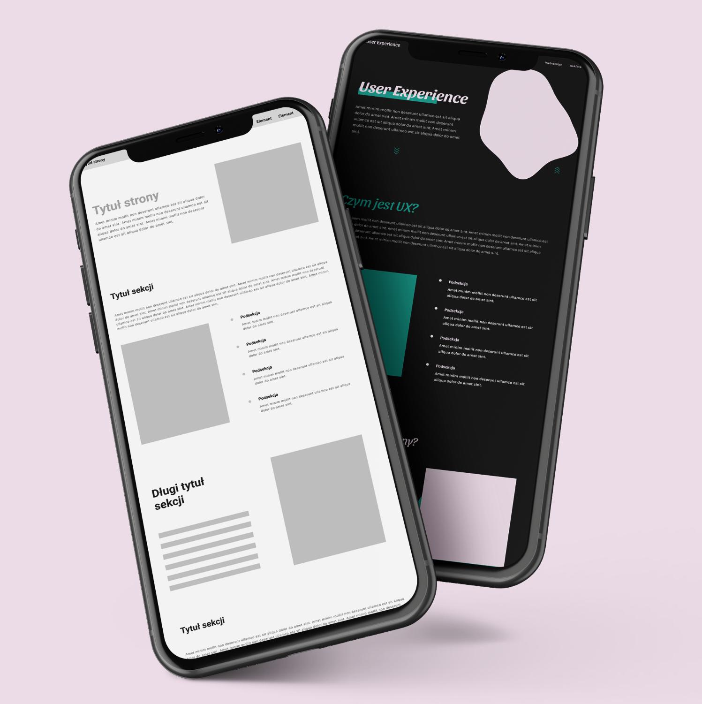

User Experience
User Experience (UX) to termin, który w ostatnich latach zyskał dużą popularność, zwłaszcza w odniesieniu do stron internetowych. Ta strona jest pojświęcona UX i jest częścią pracy magisterskiej. Zapoznaj się z treścią strony, wypełnij ankietę w zakładce 'Ankieta' i przejdź do drugiego serwisu.
